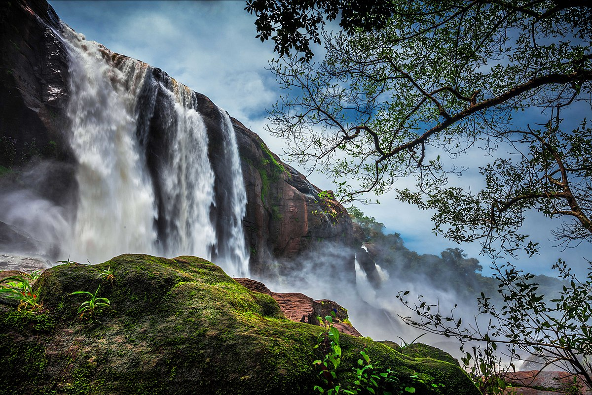
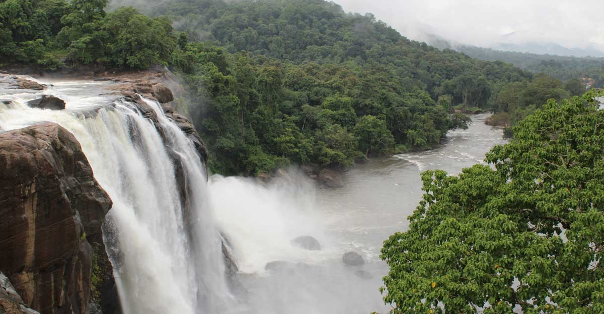

Athirappilly Waterfalls – Listen To The Water Gushing
Located 60 km from the city, Athirapally Falls is amongst the top places to see in Thrissur. The 80 feet high and 330 feet wide falls come all the way from the Anamudi Mountains and are often called as the Niagara Falls of India. If you’re looking for a blissful escape, don’t think much and head right to this place. Timings: Open on all days from 8:00 AM to 6:00 PM Entry Fees: INR 15 per person TripAdvisor Rating: 4.5/5 Location: Athirappilly, Chalakudy Taluk, Thrissur, Kerala Famous For: Panoramic view of Thrissur
...
...